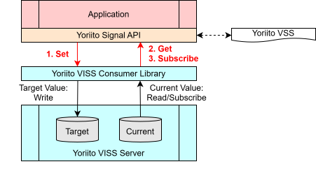

Part2 Practice
5. Building Your First Yoriito Vehicle API Application 📱
5-1. Introduction
In this tutorial, you will learn how to use the Yoriito Signal API through sample code, and build a sample application with it. By running the development environment you built in Chapter 4, you can experience application development using the Yoriito Signal API.
5-2. Basics
The Yoriito Signal API is a set of APIs that correspond one-to-one with Yoriito VSS.
It consists of:
- Get – to obtain the current value
- Set – to set a target value
- Subscribe – to continuously receive changes in the current value
This section shows sample code for each of these.

For more details on the Yoriito Signal API, see "2. System Configuration/Scope/Versioning". For more details on VSS, see "3. VSS/VISS".
Try running and modifying the sample code, and apply it to your own application development. To check the behavior of the sample code, make sure to start the simulator first by following "4-6. Start the simulator".
5-2-1. Check the current state of the high beam: Get
What is Get?
Getis used when you want to obtain the current value.- You can call
Getfor signals whose type is Actuator / Sensor / Attribute.
Sample code (yoriito-tutorial/tutorial/get/src/main.cc)
- The following code retrieves the current high-beam state (ON/OFF).
#include "yoriito/yoriito_log.h"
#include <yoriito/signal/body/Body.h>
namespace {
constexpr int kExitOk = 0;
constexpr int kExitNg = 1;
} // namespace
int main() {
YORIITO_LOG_INITIALIZE("get");
auto result = yoriito::vehicle::body::lights::beam::high::ison::Get();
if (result.IsErr()) {
auto err = result.TakeErr();
YORIITO_LOG_ERROR("get", std::string("Get failed: ") + err->Message() +
" (code=" + std::to_string(err->ErrorCode()) +
")");
YORIITO_LOG_FINALIZE();
return kExitNg;
}
auto data_point = result.TakeOk().value();
const bool value = data_point.GetData();
YORIITO_LOG_INFO("get",
std::string("Get succeeded: ") + (value ? "true" : "false"));
YORIITO_LOG_FINALIZE();
return kExitOk;
}
Build & run steps
-
Start the simulator if it is not running yet.
$ cd /work/ref_pal $ npm ci $ ./init_pal.sh $ npx electron . --no-sandbox -
Build
$ cd /work/tutorial/get $ cmake -S . -B build $ cmake --build build -j -
Run
$ ./build/get
Info
If the command fails with a No data error, rerun ./init_pal.sh to initialize the signal data, then retry the command.
Example use cases
- Display the current state on the screen
- e.g., get "High beam: ON/OFF", "Wiper: AUTO" and reflect them in the UI
- Get the current value only when needed
- e.g., fetch values only when the user presses a "Refresh" button
5-2-2. Turn on the high beam: Set
What is Set?
Setis used when you want to set a target value.- You can call
Setonly for signals whose type is Actuator.
Sample code (yoriito-tutorial/tutorial/set/src/main.cc)
#include "yoriito/yoriito_log.h"
#include <yoriito/signal/body/Body.h>
namespace {
constexpr int kExitOk = 0;
constexpr int kExitNg = 1;
} // namespace
int main() {
YORIITO_LOG_INITIALIZE("set");
const bool is_on = true;
yoriito::Result<void> set_result =
yoriito::vehicle::body::lights::beam::high::ison::Set(is_on);
if (set_result.IsErr()) {
const yoriito::Result<void>::ErrorPtr err = set_result.TakeErr();
YORIITO_LOG_ERROR("set", std::string("Set failed: ") + err->Message() +
" (code=" + std::to_string(err->ErrorCode()) +
")");
YORIITO_LOG_FINALIZE();
return kExitNg;
}
YORIITO_LOG_INFO(
"set", std::string("Set succeeded: ") + (is_on ? "true" : "false"));
YORIITO_LOG_FINALIZE();
return kExitOk;
}
Build & run steps
-
Start the simulator if it is not running yet.
$ cd /work/ref_pal $ npm ci $ ./init_pal.sh $ npx electron . --no-sandbox -
Build
$ cd /work/tutorial/set $ cmake -S . -B build $ cmake --build build -j -
Run
$ ./build/set
Info
If the command fails with a No data error, rerun ./init_pal.sh to initialize the signal data, then retry the command.
Example use cases
- Control vehicle functions based on user operations
- e.g., high beam ON/OFF, A/C temperature setting, seat heater ON/OFF etc.
5-2-3. Receive a high-beam state change: Subscribe
What is Subscribe?
Subscribeis used when you want to continuously receive changes in the current value.- You can call
Subscribefor signals whose type is Actuator / Sensor. - In this sample, the application waits for one high-beam state update, outputs the received value, and then calls
UnSubscribeto end the subscription.
Sample code (yoriito-tutorial/tutorial/subscribe/src/main.cc)
#include "yoriito/yoriito_log.h"
#include <yoriito/signal/body/Body.h>
namespace {
constexpr int kExitOk = 0;
constexpr int kExitNg = 1;
namespace high_beam = yoriito::vehicle::body::lights::beam::high::ison;
} // namespace
int main() {
YORIITO_LOG_INITIALIZE("subscribe");
auto subscribe_result = high_beam::Subscribe();
if (subscribe_result.IsErr()) {
auto error = subscribe_result.TakeErr();
YORIITO_LOG_ERROR("subscribe",
std::string("Subscribe failed: ") + error->Message() +
" (code=" + std::to_string(error->ErrorCode()) + ")");
YORIITO_LOG_FINALIZE();
return kExitNg;
}
auto subscription_context = subscribe_result.TakeOk().value();
YORIITO_LOG_INFO("subscribe", "Waiting for one update...");
int exit_code = kExitOk;
auto message_result = subscription_context.Messages();
if (message_result.IsErr()) {
auto error = message_result.TakeErr();
YORIITO_LOG_ERROR("subscribe",
std::string("Messages() failed: ") + error->Message() +
" (code=" + std::to_string(error->ErrorCode()) + ")");
exit_code = kExitNg;
} else {
auto data_point = message_result.TakeOk().value();
const bool is_on = data_point.GetData();
YORIITO_LOG_INFO("subscribe", std::string("IsOn updated: ") +
(is_on ? "true" : "false"));
}
auto unsubscribe_result =
high_beam::UnSubscribe(std::move(subscription_context));
if (unsubscribe_result.IsErr()) {
auto error = unsubscribe_result.TakeErr();
YORIITO_LOG_ERROR("subscribe",
std::string("UnSubscribe failed: ") + error->Message() +
" (code=" + std::to_string(error->ErrorCode()) + ")");
exit_code = kExitNg;
} else {
YORIITO_LOG_INFO("subscribe", "UnSubscribe succeeded.");
}
YORIITO_LOG_FINALIZE();
return exit_code;
}
Build & run steps
-
Start the simulator if it is not running yet.
$ cd /work/ref_pal $ npm ci $ ./init_pal.sh $ npx electron . --no-sandbox -
Build
$ cd /work/tutorial/subscribe $ cmake -S . -B build $ cmake --build build -j # If not already done, build Set as well $ cd /work/tutorial/set $ cmake -S . -B build $ cmake --build build -j -
Run
-
First, run
Subscribe:$ cd /work/tutorial/subscribe $ ./build/subscribe -
Then, in another terminal, run
Set:$ cd /work/tutorial/set $ ./build/set -
After
Setruns, theSubscribeprocess receives one update, unsubscribes, and exits.
-
Info
If the command fails with a No data error, rerun ./init_pal.sh to initialize the signal data, then retry the command.
Example use cases
- Reflect state changes in the UI in real time
- e.g., when the physical high-beam switch changes ON/OFF, the app UI updates immediately
- Detect abnormalities
- e.g., show a warning if temperature exceeds a specified value
5-3. Advanced
In the Basics section, you learned how to obtain and control vehicle signals using Get / Set / Subscribe of the Yoriito Signal API. In the Advanced section, you will learn concepts needed to develop more realistic applications, along with sample code.
5-3-1. Check whether the front fog light is available: Availability
What is Availability?
- In the Basics section, sample code for
Get/Set/Subscribeassumed that the high-beam signal is available. - In this section, the sample code checks the availability of the front fog light as both a sensor and an actuator.
- In real vehicles, however, a signal may or may not be usable depending on the vehicle state and conditions. A function may be available on one vehicle but not on another.
- To inform applications of these differences,
Availabilityis provided to represent whether a signal is usable. - Availability takes either
trueorfalse:true: the signal is currently availablefalse: the signal exists but is currently unavailable
- Depending on the kind of signal, two types of Availability are defined:
Availability_Sensor- Indicates whether the current value can be obtained via
Get.
- Indicates whether the current value can be obtained via
Availability_Actuator- Indicates whether the target value can be set via
Set.
- Indicates whether the target value can be set via
- For more details on Availability, see "2-5. System Behavior".
Sample code (yoriito-tutorial/tutorial/availability/src/main.cc)
#include "yoriito/yoriito_log.h"
#include <yoriito/signal/body/Body.h>
namespace {
constexpr int kExitOk = 0;
constexpr int kExitNg = 1;
} // namespace
int main() {
YORIITO_LOG_INITIALIZE("availability");
auto result = yoriito::vehicle::body::lights::fog::front::ison::Get();
if (result.IsErr()) {
auto err = result.TakeErr();
YORIITO_LOG_ERROR("availability",
std::string("Get failed: ") + err->Message() +
" (code=" + std::to_string(err->ErrorCode()) + ")");
YORIITO_LOG_FINALIZE();
return kExitNg;
}
auto data_point = result.TakeOk().value();
const bool is_available_sensor = data_point.IsAvailableSensor();
const bool is_available_actuator = data_point.IsAvailableActuator();
YORIITO_LOG_INFO("availability",
std::string("Available Sensor: ") +
(is_available_sensor ? "true" : "false"));
YORIITO_LOG_INFO("availability",
std::string("Available Actuator: ") +
(is_available_actuator ? "true" : "false"));
YORIITO_LOG_FINALIZE();
return kExitOk;
}
Build & run steps
-
Start the simulator if it is not running yet.
$ cd /work/ref_pal $ npm ci $ ./init_pal.sh $ npx electron . --no-sandbox -
Build
$ cd /work/tutorial/availability $ cmake -S . -B build $ cmake --build build -j -
Run
$ ./build/availability
Tip
Try changing the signal in the sample code to another one, then rebuild and run. For example, if you change it to yoriito::vehicle::body::lights::beam::high::ison, both sensor and actuator availability should be true.
Example use cases
Availability is mainly used in the following situations:
- GUI control
- Automatically gray out buttons for unavailable functions.
- User guidance
- Show messages such as "Currently not operable" when conditions are not met (e.g., while driving).
- Check before sending operation requests
- Verify availability before sending an operation request via the API.
This ensures the UI/application behavior stays consistent with the actual vehicle state.
5-3-2. Get detailed information (metadata) of the high beam: Inspect
What is Inspect?
- In the Basics section, we dealt with Boolean signals. In real vehicles, there are also
intandfloatsignals. - In such cases, you may want to know the minimum and maximum values.
- For example, for vehicle speed, you may want to know whether the unit is km/h or mph.
- For this purpose, the
Inspectmethod is provided. - By calling
Inspect, you can get detailed information (metadata) of a signal. -
Key data fields obtainable via
Inspect:Data Meaning pathFull path of the signal (e.g. Vehicle.Body.Lights.Beam.High.IsOn)datatypeData type (e.g. boolean,int,float,string)entry_typeNode type: branch/sensor/actuator/attributeunitUnit (e.g. km/h,%,°C)minMinimum value maxMaximum value commentAdditional notes allowedAllowed values (e.g. ['AUTO', 'LOW', 'MID', 'HIGH'])default_valueDefault value descriptionDescription of the signal array_sizeNumber of elements if it is an array
Sample code (yoriito-tutorial/tutorial/inspect/src/main.cc)
#include "yoriito/yoriito_log.h"
#include <yoriito/signal/body/Body.h>
namespace {
constexpr int kExitOk = 0;
constexpr int kExitNg = 1;
} // namespace
int main() {
YORIITO_LOG_INITIALIZE("inspect");
auto result = yoriito::vehicle::body::lights::beam::high::ison::Inspect();
if (result.IsErr()) {
auto err = result.TakeErr();
YORIITO_LOG_ERROR("inspect",
std::string("Inspect failed: ") + err->Message() +
" (code=" + std::to_string(err->ErrorCode()) + ")");
YORIITO_LOG_FINALIZE();
return kExitNg;
}
auto inspect_response = result.TakeOk().value();
auto data_points = inspect_response.GetDataPoints();
if (data_points.empty()) {
YORIITO_LOG_ERROR("inspect", "Inspect failed: No data points returned.");
YORIITO_LOG_FINALIZE();
return kExitNg;
}
const auto &inspect_data = data_points.front();
const auto &path = inspect_data.GetPath();
// const auto &data_type = inspect_data.GetDataType();
// const auto &entry_type = inspect_data.GetEntryType();
// const auto &deprecation = inspect_data.GetDeprecation();
// const auto &unit = inspect_data.GetUnit();
// const auto &min = inspect_data.GetMin();
// const auto &max = inspect_data.GetMax();
// const auto &comment = inspect_data.GetComment();
// const auto &allowed = inspect_data.GetAllowed();
// const auto &default_value = inspect_data.GetDefaultValue();
const auto &description = inspect_data.GetDescription();
// const auto &array_size = inspect_data.GetArraySize();
// const auto &pattern = inspect_data.GetPattern();
// const auto &custom_attributes = inspect_data.GetCustomAttributes();
YORIITO_LOG_INFO("inspect", "Inspect succeeded");
YORIITO_LOG_INFO("inspect", std::string("Path: ") + path);
YORIITO_LOG_INFO("inspect", std::string("Description: ") + description);
YORIITO_LOG_FINALIZE();
return kExitOk;
}
Build & run steps
-
Start the simulator if it is not running yet.
$ cd /work/ref_pal $ npm ci $ ./init_pal.sh $ npx electron . --no-sandbox -
Build
$ cd /work/tutorial/inspect $ cmake -S . -B build $ cmake --build build -j -
Run
$ ./build/inspect
Example use cases
Inspect is mainly used in the following situations:
- Check before sending operation requests
- Confirm that the value to be set is within the min/max range of the signal.
- GUI control
- Display min/max values for temperature settings or window opening percentage.
- Prevent users from setting values outside the valid range.
- Support multiple vehicle types
- Obtain the correct range even when controllable ranges differ across vehicle types and equipment.
5-3-3. Control the simulator vehicle via Text User Interface (TUI)
So far, you have learned the Yoriito Signal API through coding. VSS defines many more signals, and various applications can be developed using them.
Writing code each time just to check a signal's behavior is time-consuming. For this purpose, a Text User Interface is provided. For usage, see "Connect vshot" in the PAL developer tutorial.
5-4. Troubleshooting
5-4-1. "Tools or libraries not found" errors
-
Cause
You may be running commands in the host environment instead of inside the container. -
Countermeasure
- Start the container as described in "4-5. Start the container" and run commands in a terminal inside the container.
- All required tools and libraries are already installed in the container.
5-4-2. "Cannot connect to localhost (127.0.0.1)" error
-
Cause
Even local communication (localhost/127.0.0.1) may be routed through a proxy, which can prevent a proper connection tolocalhost. -
Countermeasure
- Check the proxy-related environment variables (
no_proxy/NO_PROXY) in the container. -
Running the following commands in the container terminal may resolve the issue:
$ export no_proxy=127.0.0.1,localhost $ export NO_PROXY=127.0.0.1,localhost -
If this resolves the issue, add
remoteEnvto.devcontainer/devcontainer.jsonso that the setting persists after restarting the container. After changing the settings, rebuild the Dev Container."remoteEnv": { "no_proxy": "127.0.0.1,localhost", "NO_PROXY": "127.0.0.1,localhost" },
- Check the proxy-related environment variables (